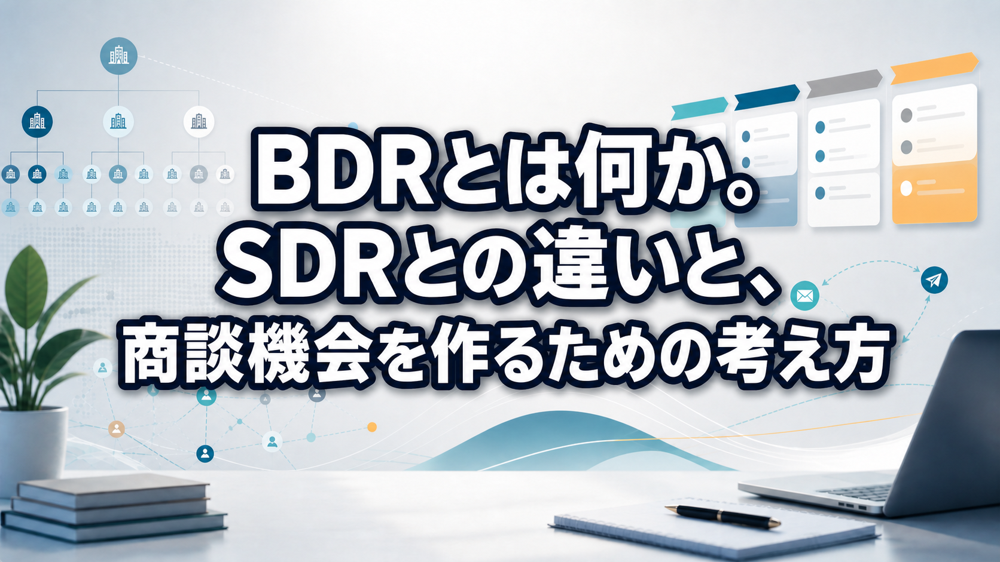

BDRとは何か。SDRとの違いと、商談機会を作るための考え方

みなさんこんにちは、Valorize AI代表の鈴木創也です。
BDRという言葉を調べると、「アウトバウンド営業」「大企業向けのインサイドセールス」と説明されることが多いです。
もちろん、その理解は大きく外れていません。ただ、そのまま受け取ると、BDRが「架電数やメール数を増やす活動」に見えてしまうことがあります。
僕は、BDRの本質はそこではないと考えています。
BDRの本質は、狙うべきアカウントを選び、その企業の組織構造や購買関係者を理解したうえで、商談機会につながる接点を設計することです。BDRは、単に接触数を増やす活動ではありません。誰に、何を、どの順番で届けるかを決め、商談機会を作るための営業活動です。
この記事では、BDRの意味、SDRとの違い、具体的な進め方、成功のポイント、活用するツールまで整理します。
BDRとは何か
BDRは、Business Development Representativeの略です。
一般的には、新規顧客開拓を目的として、アウトバウンド型で商談機会を作るインサイドセールスの役割として説明されます。
SalesforceはBDRを、新しいビジネス機会を創出する営業職種として説明しており、見込み客の探索、リードの見極め、ナーチャリング、商談設定などを主な業務として挙げています。
BDRの主な役割は、まだ明確な問い合わせがない企業、あるいは自社との接点が薄い企業に対して、最初の接点を作り、営業パイプラインを前に進めることです。
たとえば、次のような活動がBDRに含まれます。
- 狙うべき企業を選ぶ
- 対象企業の事業内容や組織構造を調べる
- 部署、役職、決裁者、影響者を把握する
- 電話、メール、手紙、イベントなどで接点を作る
- 相手企業に合わせてメッセージを設計する
- 商談化したらフィールドセールスへ引き継ぐ
そのため、BDRを「テレアポ担当」とだけ捉えると、本来の役割をかなり狭く見てしまいます。
BDRは、狙う企業との接点を作り、営業パイプラインを広げる役割です。
BDRとSDRの違い
BDRと一緒に語られやすい言葉に、SDRがあります。
SDRは、Sales Development Representativeの略です。BDRと同じく、商談機会を作るインサイドセールスの役割として使われます。
ただし、BDRとSDRの定義は企業によって揺れます。会社によっては、どちらも商談機会を作るインサイドセールス職種として使われることもありますし、役割を明確に分けることもあります。
一般的な整理としては、次のように考えると分かりやすいです。
BDR
- アプローチ起点: アウトバウンド中心
- 顧客状態: まだ接点が薄い企業、潜在層、未接点企業
- 対象企業: 大企業、エンタープライズ、官公庁、地方公共団体などを狙うことが多い
- 活動内容: アカウント調査、キーパーソン特定、個別接触、商談機会の創出
- 重視すること: 狙う企業を決め、企業ごとに接点を設計すること
SDR
- アプローチ起点: インバウンド中心
- 顧客状態: 問い合わせ、資料請求、ウェビナー参加などで接点があるリード
- 対象企業: 中小企業を含む幅広いリードに対応することが多い
- 活動内容: リード対応、関心度の確認、課題のヒアリング、商談化
- 重視すること: 反応があったリードを適切に見極め、商談につなげること
つまり、BDRとSDRの違いは、厳密な職種名の違いというよりも、「どの顧客に、どの起点で、どのように商談機会を作るか」の違いとして理解すると分かりやすくなります。
BDRは、まだ反応がない企業に対して能動的に接点を作る役割です。SDRは、すでに何らかの反応があるリードを商談につなげる役割として整理されることが多いです。
BDRの具体的なアプローチ手法
BDRのアプローチ手法というと、電話やメールを想像する方が多いと思います。
もちろん、電話やメールは重要です。ただ、BDRでは接触チャネルより前に、対象企業の理解が必要です。
組織図・決裁フロー・キーパーソンを把握する
BDRで最初に考えるべきなのは、「誰に連絡するか」です。
大企業や複数部門が関わる商材では、最初に話す相手が決裁者とは限りません。課題を持っている人、情報収集をしている人、比較検討する人、承認する人、導入後に使う人が分かれていることがあります。
そのため、次のような情報を整理します。
- どの部署が課題を持っていそうか
- どの役職が意思決定に関わるか
- 利用部門と決裁部門は同じか
- 既存取引や過去接点はあるか
- 誰に最初に接触すると会話が進みやすいか
接触先を一人に固定すると、相手企業の中で商談が止まることがあります。BDRでは、企業単位で関係者を把握し、接点を広げていく視点が必要です。
電話・メール・DM・手紙で接点を作る
電話とメールは、BDRの基本的な接点です。
ただし、テンプレートを大量送信するだけでは、エンタープライズ開拓では反応を得にくくなります。相手企業の事業、部署、役職、直近の動きに合わせて、なぜ連絡したのかを明確にする必要があります。
DMや手紙は、特定企業や特定役職に印象を残す手段として使われることがあります。特に、接点を作りにくい役職者に対しては、メールだけでなく手紙を組み合わせることで、認知を作りやすくなる場合があります。
ただし、手紙を送れば商談化するという話ではありません。手紙やDMは、フォロー架電やメールと組み合わせて、接点を作るための一つの手段として考えるべきです。
展示会・イベント・SNS・コンテンツを活用する
展示会やイベントも、BDRの接点づくりに使えます。
展示会で名刺交換をしただけでは、まだ商談ではありません。重要なのは、その後のフォローです。どのテーマに関心を持っていたのか、どの部署の人だったのか、どのタイミングで再接触すべきかを記録し、次の会話につなげる必要があります。
SNSやコンテンツ配信も、接触前の認知形成や関係構築に役立ちます。いきなり営業連絡をするのではなく、相手の関心に合う情報を届けることで、会話の入口を作りやすくなります。
ただし、主軸はあくまで商談機会の創出です。チャネルを増やすこと自体が目的ではありません。
既存顧客の未契約部門にも広げる
BDRは、完全な新規企業だけを対象にするとは限りません。
既存顧客の中に、まだ契約していない部門がある場合や、別商材を提案できる余地がある場合もあります。これは、アップセルやクロスセルに近い活動です。
この場合も、考え方は同じです。既存取引があるからといって、別部門の課題や決裁構造が同じとは限りません。部門ごとの課題、関係者、導入背景を理解したうえで接点を作る必要があります。
BDRでは、チャネルを選ぶだけでなく、誰に、どの文脈で、どの順番で接触するかを設計する必要があります。
BDRを実践する基本的な流れ
BDRを始めるときは、いきなり電話やメールから考えない方がよいです。
先に、どのアカウントをなぜ狙うのかを決める必要があります。
基本的な流れは次の通りです。
- 目的と方針を決める
- ターゲットアカウントを選定する
- 対象企業の情報を調査する
- 組織図・決裁フロー・キーパーソンを把握する
- 企業ごとにメッセージを設計する
- 電話・メール・DM・イベントなどで接触する
- フォローし、反応や接点を記録する
- 商談化したらフィールドセールスへ引き継ぐ
最初に決めるべきなのは、目的です。
新規の大企業開拓をしたいのか、特定業界を攻めたいのか、既存顧客の未契約部門を広げたいのかによって、対象企業も接触方法も変わります。
次に、ターゲットアカウントを選びます。企業規模、業種、地域、導入可能性、LTV、既存接点、課題仮説などを見ながら、優先順位を付けます。
その後、対象企業を調査します。事業内容、組織、役職者、導入事例、ニュース、採用情報、IR情報などから、どの部署に課題がありそうかを考えます。
接触前には、企業ごとにメッセージを設計します。同じ商材でも、経営層、現場責任者、情報システム部門では関心事が違います。誰に何を伝えるかを分けることで、会話の精度が上がります。
商談化した後は、フィールドセールスへ引き継ぎます。このとき、接触履歴、相手の反応、課題仮説、関係者情報が残っていないと、商談の質が落ちます。
BDRは、接触チャネルから考えるのではなく、どのアカウントをなぜ狙うのかを決めてから実行する必要があります。
BDRを成功させるポイント
BDRの成果は、活動量だけでは判断しにくいです。
架電数やメール数はもちろん必要ですが、それだけを見ていると、どの企業に対して何が進んでいるのかが見えなくなります。
ターゲット企業を絞り込む
BDRでは、すべての企業に同じ優先度で接触すべきではありません。
特にエンタープライズ開拓は工数がかかります。企業調査、キーパーソン把握、個別メッセージ設計、複数回のフォローが必要になるため、狙う理由がない企業まで広げると、活動が薄くなります。
ターゲット選定では、次のような観点を確認します。
- LTVを見込めるか
- 導入可能性があるか
- 自社商材と課題が合うか
- 業種や企業規模が合っているか
- 既存接点や紹介経路があるか
- 複数部門への展開余地があるか
エンタープライズ企業は高単価・長期取引を狙いやすい場合がありますが、必ず高収益になるわけではありません。商材、導入難易度、運用負荷、契約形態によって変わります。
だからこそ、狙う企業を明確にする必要があります。
One to Oneでメッセージを設計する
BDRでは、テンプレートに頼りすぎると反応が落ちやすくなります。
相手企業の状況、部署、役職、関心事に合わせて、メッセージを変える必要があります。
たとえば、経営層には事業成長や投資対効果が重要になるかもしれません。現場責任者には業務負荷や運用改善が重要かもしれません。情報システム部門にはセキュリティや既存システムとの連携が重要になるかもしれません。
同じ商材でも、相手によって伝えるべき内容は変わります。
One to Oneのメッセージ設計とは、単に宛名を差し替えることではありません。相手企業の状況に合わせて、なぜ今連絡するのか、何が相手にとって関係するのかを明確にすることです。
営業・マーケティング・フィールドセールスで連携する
BDRは、単独で完結する活動ではありません。
マーケティングは、ターゲット企業に届けるコンテンツや接点づくりを支えます。BDRは、対象企業を調査し、接点を作り、商談機会を作ります。フィールドセールスは、商談化後に具体的な提案やクロージングを担います。
この連携が不十分だと、BDRが作った接点が商談につながりにくくなります。
たとえば、BDRが相手企業の課題仮説を把握していても、フィールドセールスに共有されていなければ、商談で同じ質問を繰り返すことになります。相手から見ると、社内で情報がつながっていない印象になります。
BDRでは、引き継ぎ情報の質も成果に関わります。
中長期で関係を作る
BDRでは、一度の接触で商談化しないことも多いです。
特に大企業や官公庁、地方公共団体では、タイミング、予算、社内体制、既存契約などによって、すぐに話が進まないことがあります。
そのため、接点履歴を残し、再接触のタイミングを管理することが重要です。
今は商談化しなくても、半年後に組織変更があるかもしれません。来期予算の検討が始まるかもしれません。担当者が別部門へ異動するかもしれません。
BDRの活動は、活動量だけを見ても改善できません。どの企業に、どの関係者へ、どの文脈で接触したかを管理して初めて改善できます。
BDRで活用するツール
BDRでは、MA、SFA、CRMなどが使われます。
ただし、ツールを導入すればBDRが成功するわけではありません。ツールは、狙う企業、接触先、活動履歴、商談化状況を管理するための基盤です。
それぞれの役割は、次のように整理できます。
CRM
顧客情報や企業情報を管理します。既存顧客、過去接点、担当者情報、契約状況などを整理し、アカウント全体の状態を把握するために使います。
SFA
営業活動、商談、パイプラインを管理します。BDRが作った商談がどのように進んでいるか、どの活動が商談化につながったかを確認するために使います。
MA
メール配信、ナーチャリング、スコアリングなどに使います。接触前後の情報提供や、反応のある見込み顧客の把握に役立ちます。
また、BDRではKPIも階層で見る必要があります。
- 活動量: 架電数、メール数、DM送付数
- 接続: 接続数、返信数、会話数
- 商談: 商談設定数、商談化率
- パイプライン: 作成パイプライン、受注への貢献
- アカウント進捗: ターゲット企業内の接点数、関係者把握、次回接触予定
The Bridge GroupのSales Development領域の調査でも、BDRやSDRなどの組織では、活動量だけでなく、Quota、達成率、日次活動、接続、Tech stackなど複数観点の指標が扱われています。
ツールを導入するだけでBDRの成果が決まるわけではありません。ただし、狙う企業、接触先、活動履歴、商談化状況を一元管理するうえでは重要な基盤になります。
BDRを属人化させないための管理方法
BDRの運用は、属人化しやすい傾向があります。
なぜなら、ターゲット選定、企業調査、接触先判断、文面作成、フォロー判断などに、担当者の経験が入りやすいからです。
もちろん、営業担当者の経験や判断は重要です。ただ、それだけに依存すると、活動量は増えても、どの企業にどの仮説で接触したのかが残りにくくなります。
BDRで管理すべき情報は、少なくとも次のようなものです。
- ターゲット条件
- 企業情報
- 接触先の部署・役職
- 接触履歴
- 相手の反応
- 次回フォロー予定
- 商談化状況
- フィールドセールスへの引き継ぎ内容
これらが残っていれば、うまくいった活動も、うまくいかなかった活動も振り返れます。逆に残っていなければ、担当者ごとの感覚に頼るしかありません。
BDRを仕組みとして運用するには、ターゲット選定、リスト作成、顧客情報調査、提案文作成、アプローチ、商談獲得までの流れを一貫して整える必要があります。
Sales Triggerは、このような新規開拓業務の前工程を支援します。ターゲット選定、リスト作成、顧客情報調査、提案文作成、メール・問い合わせフォームによる顧客アプローチ、商談獲得までの一連の新規開拓業務の自動化・支援に対応しています。
https://salestrigger.valorize-ai.com/
まとめ
BDRは、Business Development Representativeの略です。新規商談機会を作る役割を担います。
一般的には、SDRがインバウンド中心のリード対応として整理されるのに対し、BDRはアウトバウンド中心で、未接点企業やエンタープライズ企業に能動的に接点を作る役割として説明されます。
BDRに取り組むなら、まず架電数やメール数ではなく、どのアカウントを狙い、どの関係者に、どのような接点を作るかを設計することが重要です。
狙う企業を決め、組織構造を理解し、キーパーソンを把握し、個別にメッセージを設計し、接点履歴を残して改善することが必要です。
この一連の流れを作れるかどうかが、BDRを単なる大量アウトバウンドで終わらせるか、営業パイプラインを作る戦略的な活動にできるかの分かれ目です。